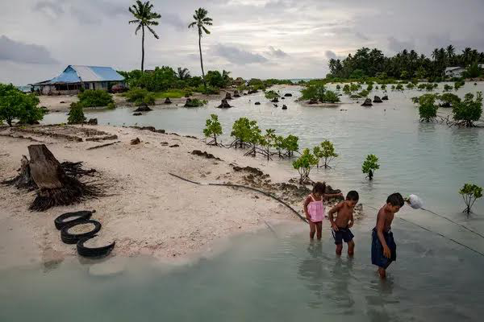

Educational Experience
Education - During my higher education experience, I have attended two univeristies. Firstly, I attended school at Texas A&M University in College Station Texas with a 3.0 GPA. Due to wanting more outdoor, and mountainous activity options such as hiking, flying, skiing, and even sand duning, I transferred to Brigham Young University - Idaho. While there, I obtained a 3.7 GPA with a Computer Science focus for my course work.
Work Experience

Work - Thus far, I have only had two major work experiences. First was immediately after high school, wherein I interned at a hydroponics farm to study modern horticulture. During the three months I was there, I was given full oversight of the hydroponics subdivision after approximately a month and a half. While I was hoping for my technological work, the experience I gained there was monumentally challenging in far more physical ways, and taught me valuable resillience pulling weeds around the pools in over 100 degree weather, and transferring plant float beds with a consistent rotation.
My second major work experience was during my time as a missionary of the Church of Jesus Christ of Latter Day Saints in the Kiribati/Marshall Islands region. Working 10 hours a day six days a week, without running water, air conditioning, beds, or walls around our sleeping huts, all while biking 4 hours a day in an average of 100 degree weather, I was again taught resilience and perseverance through difficult work environments and challenges.